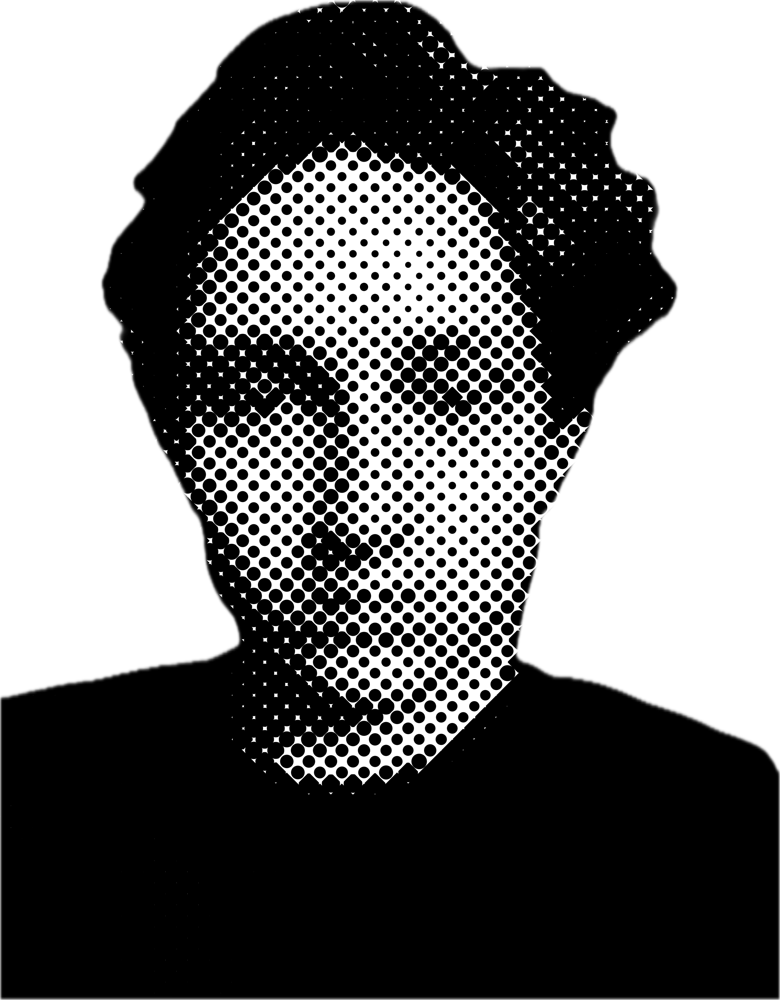

Who am I
MY NAME IS FLORIS TERPSTRA.
I AM INTERESTED IN THE CULTURE, HISTORY AND VISUAL LANGUAGE OF ELECTRONIC MUSIC. TO ME, ELECTRONIC MUSIC IS A SHARED LANGUAGE. IT CONNECTS TECHNOLOGY, HISTORY, DESIGN AND PEOPLE ON THE DANCEFLOOR. ITS INFLUENCE CAN BE HEARD FAR BEYOND CLUB MUSIC: IN POP, HIP-HOP, FILM, GAMES AND THE SOUNDS WE HEAR EVERY DAY. THIS WEBSITE EXPLORES WHERE THAT LANGUAGE CAME FROM, AND HOW IT CONTINUES TO SHAPE THE MUSIC OF TODAY.
